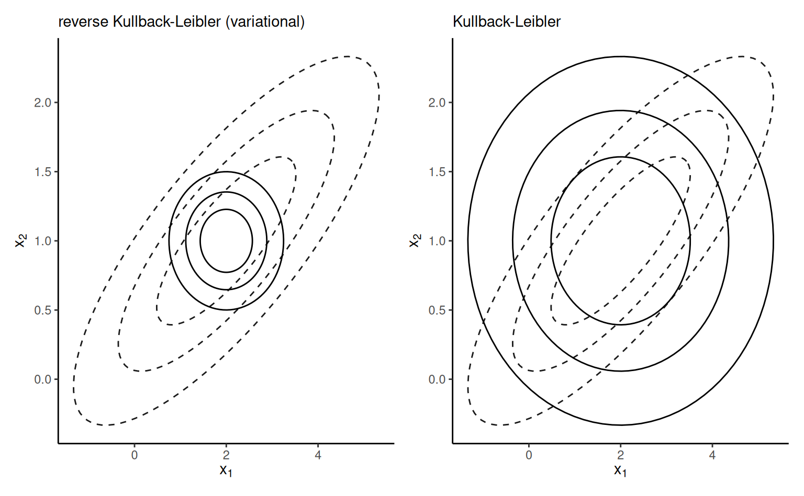
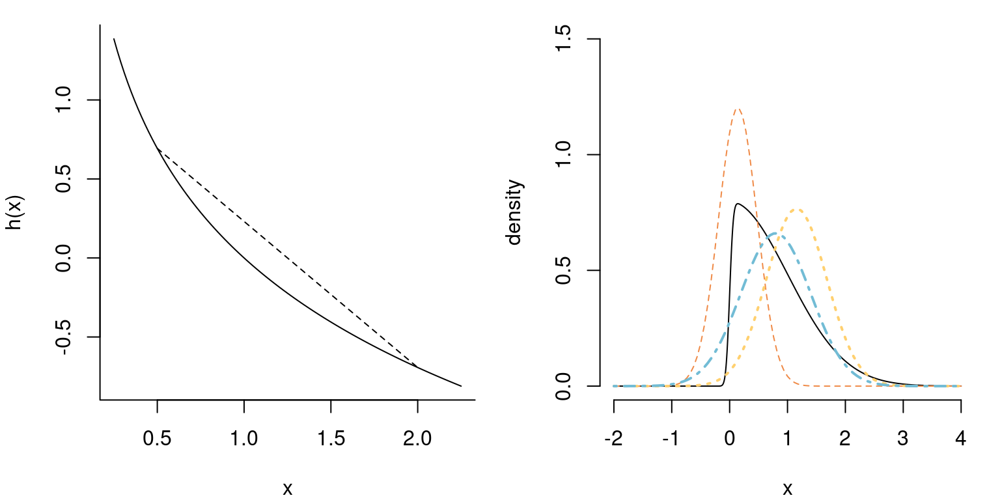

10 Variational inference
The field of variational inference, which derives it’s name from calculus of variation, uses approximations to a parametric distribution \(p(\cdot)\) by a member from a family of distributions whose density or mass function is \(g(\cdot; \boldsymbol{\psi})\) with parameters \(\boldsymbol{\psi}.\) The objective of inference is thus to find the parameters that minimize some metric that measure discrepancy between the true postulated posterior and the approximation: doing so leads to optimization problems. Variational inference is widespread in machine learning and in large problems where Markov chain Monte Carlo or other methods might not be feasible.
This chapter is organized as follows: we first review notions of model misspecification and the Kullback–Leibler divergence. We then consider approximation schemes and some examples involving mixtures and model selection where analytical derivations are possible: these show how variational inference differs from Laplace approximation and she light on some practical aspects. Good references include Chapter 10 of Bishop (2006); most modern application use automatic differentiation variational inference (ADVI, Kucukelbir et al. (2017)) or stochastic optimization via black-box variational inference.
10.1 Model misspecification
Consider \(g(\boldsymbol{\theta};\boldsymbol{\psi})\) with \(\boldsymbol{\psi} \in \mathbb{R}^J\) an approximating density function whose integral is one over \(\boldsymbol{\Theta} \subseteq \mathbb{R}^p\) and whose support includes that of \(p(\boldsymbol{y}, \boldsymbol{\theta})\) over \(\boldsymbol{\Theta}.\) Suppose data were generated from a model with true density \(f_t\) and we consider instead the family of distributions \(g(\cdot; \boldsymbol{\psi}),\) the latter may or not contain \(f_t\) as special case. Intuitively, if we were to estimate the model by maximum likelihood, we expect that the model returned will be the one closest to \(f_t\) among those considered in some sense.
Definition 10.1 (Kullback–Leibler divergence) The Kullback–Leibler divergence between densities \(f_t(\cdot)\) and \(g(\cdot; \boldsymbol{\psi}),\) is \[\begin{align*} \mathsf{KL}(f_t \parallel g) &=\int \log \left(\frac{f_t(\boldsymbol{x})}{g(\boldsymbol{x}; \boldsymbol{\psi})}\right) f_t(\boldsymbol{x}) \mathrm{d} \boldsymbol{x}\\ &= \int \log f_t(\boldsymbol{x}) f_t(\boldsymbol{x}) \mathrm{d} \boldsymbol{x} - \int \log g(\boldsymbol{x}; \boldsymbol{\psi}) f_t(\boldsymbol{x}) \mathrm{d} \boldsymbol{x} \\ &= \mathsf{E}_{f_t}\{\log f_t(\boldsymbol{X})\} - \mathsf{E}_{f_t}\{\log g(\boldsymbol{X}; \boldsymbol{\psi})\} \end{align*}\] where the subscript of the expectation indicates which distribution we integrate over. The term \(-\mathsf{E}_{f_t}\{\log f_t(\boldsymbol{X})\}\) is called the entropy of the distribution. The divergence is strictly positive unless \(g(\cdot; \boldsymbol{\psi}) \equiv f_t(\cdot).\) Note that, by construction, it is not symmetric.
The Kullback–Leibler divergence notion is central to study of model misspecification: if we fit \(g(\cdot)\) when data arise from \(f_t,\) the maximum likelihood estimator of the parameters \(\widehat{\boldsymbol{\psi}}\) will be the value of the parameter that minimizes the Kullback–Leibler divergence \(\mathsf{KL}(f_t \parallel g);\) this value will be positive unless the model is correctly specified and \(g(\cdot; \widehat{\boldsymbol{\psi}}) = f_t(\cdot).\) See Davison (2003), pp. 122–125 for a discussion.
In the Bayesian setting, interest lies in approximating \(f_t \equiv p(\boldsymbol{\theta} \mid \boldsymbol{y}).\) The problem of course is that we cannot compute expectations with respect to the posterior since these requires knowledge of the marginal likelihood, which acts as a normalizing constant, in most settings of interest. What we can do instead is to consider the model that minimizes the reverse Kullback–Leibler divergence \[\begin{align*} g(\boldsymbol{\theta}; \widehat{\boldsymbol{\psi}}) = \mathrm{argmin}_{\boldsymbol{\psi}} \mathsf{KL}\{g(\boldsymbol{\theta};\boldsymbol{\psi}) \parallel p(\boldsymbol{\theta} \mid \boldsymbol{y})\}. \end{align*}\] We will show soon that this is a sensible objective function.
It is important to understand that the lack of symmetry of the Kullback–Leibler divergence means these yield different approximations. Consider an approximation of a bivariate Gaussian vector with correlated components \(\boldsymbol{X} \sim \mathsf{Gauss}_2(\boldsymbol{\mu}, \boldsymbol{\Sigma})\). If we approximate each margin independently with a univariate Gaussian, the Kullback–Leibler divergence will have the same marginal mean \(\boldsymbol{\mu}\) and variance \(\mathrm{diag}(\boldsymbol{\Sigma})\), whereas the reverse Kullback–Leibler will have the same mean, but a variance equal to the conditional variance of one component given the other, e.g., \(\Sigma_{11} - \Sigma_{12} \Sigma_{22}^{-1}\Sigma_{21}\) for component \(X_{1}.\) Figure 10.1 shows the two approximations: the reverse Kullback–Leibler is much too narrow and only gives mass where both variables have positive density.
Definition 10.2 (Convex function) A real-valued function \(h: \mathbb{R} \to \mathbb{R}\) is convex if for any \(x_1,x_2 \in \mathbb{R}\) if any linear combination of \(x_1\) and \(x_2\) satisfies \[\begin{align*} h(tx_1 + (1-t)x_2) \leq t h(x_1) + (1-t) h(x_2), \qquad 0 \leq t \leq 1 \end{align*}\] The left panel of Figure 10.2 shows an illustration of the fact that the chord between any two points lies above the function. Examples include the exponential function, or a quadratic \(ax^2+bx + c\) with \(a>0.\)

Consider now the problem of approximating the marginal likelihood, sometimes called the evidence, \[\begin{align*} p(\boldsymbol{y}) = \int_{\boldsymbol{\Theta}} p(\boldsymbol{y}, \boldsymbol{\theta}) \mathrm{d} \boldsymbol{\theta}. \end{align*}\] where we only have the joint \(p(\boldsymbol{y}, \boldsymbol{\theta})\) is the product of the likelihood times the prior. The marginal likelihood is typically intractable, or very expensive to compute, but it is necessary to calculate probability and various expectations with respect to the posterior unless we draw samples from it.
We can rewrite the marginal likelihood as \[\begin{align*} p(\boldsymbol{y}) = \int_{\boldsymbol{\Theta}} \frac{p(\boldsymbol{y}, \boldsymbol{\theta})}{g(\boldsymbol{\theta};\boldsymbol{\psi})} g(\boldsymbol{\theta};\boldsymbol{\psi}) \mathrm{d} \boldsymbol{\theta}. \end{align*}\] With convex functions, Jensen’s inequality implies that \(h\{\mathsf{E}(X)\} \leq \mathsf{E}\{h(X)\},\) and applying this with \(h(x)=-\log(x),\) we get \[\begin{align*} -\log p(\boldsymbol{y}) = -\log \left\{\int_{\boldsymbol{\Theta}} p(\boldsymbol{y}, \boldsymbol{\theta}) \mathrm{d} \boldsymbol{\theta}\right\} \leq - \log \int_{\boldsymbol{\Theta}} \left(\frac{p(\boldsymbol{y}, \boldsymbol{\theta})}{g(\boldsymbol{\theta};\boldsymbol{\psi})}\right) g(\boldsymbol{\theta};\boldsymbol{\psi}) \mathrm{d} \boldsymbol{\theta}. \end{align*}\]
We can get a slightly different take if we consider the reformulation \[\begin{align*} \mathsf{KL}\{g(\boldsymbol{\theta};\boldsymbol{\psi}) \parallel p(\boldsymbol{\theta} \mid \boldsymbol{y})\} = \mathsf{E}_{g}\{\log g(\boldsymbol{\theta})\} - \mathsf{E}_g\{\log p(\boldsymbol{y}, \boldsymbol{\theta})\} + \log p(\boldsymbol{y}). \end{align*}\] Instead of minimizing the Kullback–Leibler divergence, we can thus equivalently maximize the so-called evidence lower bound (ELBO) \[\begin{align*} \mathsf{ELBO}(g) = \mathsf{E}_g\{\log p(\boldsymbol{y}, \boldsymbol{\theta})\} - \mathsf{E}_{g}\{\log g(\boldsymbol{\theta})\} \end{align*}\] The ELBO as an objective function balances between two terms: the first term is the expected value of the joint posterior under the approximating density \(g,\) which will be maximized by taking a distribution placing all mass at the maximum of \(p(\boldsymbol{y}, \boldsymbol{\theta}),\) whereas the second term can be viewed as a penalty for the entropy of the approximating family, which rewards distributions which are diffuse. We thus try to maximize the evidence, subject to a regularization term.
The ELBO is a lower bound for the marginal likelihood because the Kullback–Leibler divergence is non-negative and \[\begin{align*} \log p(\boldsymbol{y}) = \mathsf{ELBO}(g) + \mathsf{KL}\{g(\boldsymbol{\theta};\boldsymbol{\psi}) \parallel p(\boldsymbol{\theta} \mid \boldsymbol{y})\}. \end{align*}\] If we could estimate the marginal likelihood of a (typically simpler) competing alternative and the lower bound on the evidence in favour of the more complex model was very much larger, then we could use this but generally there is no theoretical guarantee for model comparison if we compare two lower evidence lower bounds. The purpose of variational inference is that approximations to expectations, credible intervals, etc. are obtained from \(g(\cdot; \boldsymbol{\psi})\) instead of \(p(\cdot).\)
Remark 10.1 (Approximation of latent variables). While we have focused on exposition with only parameters \(\boldsymbol{\theta},\) this can be generalized by including latent variables \(\boldsymbol{U}\) as in Section 6.1 in addition to the model parameters \(\boldsymbol{\theta}\) as part of the variational modelling.
Example 10.1 (Variational inference vs Laplace approximation) The Laplace approximation differs from the Gaussian variational approximation; The right panel of Figure 10.2 shows a skew-Gaussian distribution with location zero, unit scale and a skewness parameter of \(\alpha=10;\) it’s density is \(2\phi(x)\Phi(\alpha x).\)
The Laplace approximation is easily obtained by numerical maximization; the mode is the mean of the resulting approximation, with a std. deviation that matches the square root of the reciprocal Hessian of the negative log density.
Consider an approximation with \(g\) the density of \(\mathsf{Gauss}(m, s^2);\) we obtain the parameters by minimizing the ELBO. The entropy term for a Gaussian approximating density is \[\begin{align*} -\mathsf{E}_g(\log g) = \frac{1}{2}\log(2\pi \sigma^2) + \frac{1}{2s^2}\mathsf{E}_g\left\{(X-m)^2 \right\} = \frac{1}{2} \left\{1+\log(2\pi s^2)\right\} \end{align*}\] given \(\mathsf{E}_g\{(x-m)^2\}=s^2\) by definition of the variance. Ignoring constants terms that do not depend on the parameters of \(g,\) optimization of the ELBO amounts to maximization of \[\begin{align*} &\mathrm{argmax}_{m, s^2} \left[-\frac{1}{2} \mathsf{E}_g \left\{ \frac{(X-\mu)^2}{\sigma^2}\right\} + \mathsf{E}_g\left\{\log \Phi(\alpha X)\right\} + \log(s^2) \right] \\ &\quad =\mathrm{argmax}_{m, s^2} \left[ -\frac{1}{2} \mathsf{E}_g \left\{ \frac{(X-\mu)^2}{\sigma^2}\right\} + \mathsf{E}_g\left\{\log \Phi(\alpha X)\right\} + \log(s^2) \right] \\&\quad =\mathrm{argmax}_{m, s^2} \left[ -\frac{s^2 + m^2 -2\mu m}{2\sigma^2} + \log(s^2) + \mathsf{E}_{Z}\left\{\log \Phi(\alpha sX+m)\right\} \right] \end{align*}\] where \(Z \sim \mathsf{Gauss}(0,1).\) We can approximate the last term by Monte Carlo with a single sample (recycled at every iteration) and use this to find the optimal parameters. The right panel of Figure 10.2 shows that the resulting approximation aligns with the bulk. It of course fails to capture the asymmetry, since the approximating function is symmetric.
10.2 Optimization of the evidence lower bound
Variational inference in itself does not determine the choice of approximating density \(g(\cdot; \boldsymbol{\psi});\) the quality of the approximation depends strongly on the latter. The user has ample choice to decide whether to use the fully correlated, factorized, or the mean-field approximation, along with the parametric family for each block. Note that the latter must be support dependent, as the Kullback–Leibler divergence will be infinite if the support of \(g\) does not include that of \(p(\boldsymbol{\theta} \mid \boldsymbol{y})\) (although we work with the reverse Kullback–Leibler).
There are two main approaches: the first is to start off with the model with a factorization of the density, and deduce the form of the most suitable parametric family for the approximation that will minimize the ELBO. This requires bespoke derivation of the form of the density and the conditionals for each model, and does not lead itself easily to generalizations. The second approach alternative is to rely on a generic family for the approximation, and an omnibus procedure for the optimization using a reformulation via stochastic optimization that approximates the integrals appearing in the ELBO formula.
10.2.1 Factorization
Factorizations of \(g(;\boldsymbol{\psi})\) into blocks with parameters \(\boldsymbol{\psi}_1, \ldots, \boldsymbol{\psi}_M,\) where \[\begin{align*} g(\boldsymbol{\theta}; \boldsymbol{\psi}) = \prod_{j=1}^M g_j(\boldsymbol{\theta}_j; \boldsymbol{\psi}_j) \end{align*}\] If we assume that each of the \(J\) parameters \(\theta_1, \ldots, \theta_J\) are independent, then we obtain a mean-field approximation. The latter will be poor if parameters are strongly correlated, as we will demonstrate later.
We use a factorization of \(g,\) and denote the components \(g_j(\cdot)\) for simplicity, omitting dependence on the parameters \(\boldsymbol{\psi}.\) We can write the ELBO as \[\begin{align*} \mathsf{ELBO}(g) &= \int \log p(\boldsymbol{y}, \boldsymbol{\theta}) \prod_{j=1}^M g_j(\boldsymbol{\theta}_j)\mathrm{d} \boldsymbol{\theta} - \sum_{j=1}^M \int \log \{ g_j(\boldsymbol{\theta}_j) \} g_j(\boldsymbol{\theta}_j) \mathrm{d} \boldsymbol{\theta}_j \\& = \idotsint \left\{\log p(\boldsymbol{y}, \boldsymbol{\theta}) \prod_{\substack{i \neq j \\j=1}}^M g_j(\boldsymbol{\theta}_j)\mathrm{d} \boldsymbol{\theta}_{-i}\right\} g_i(\boldsymbol{\theta}_i) \mathrm{d} \boldsymbol{\theta}_i \\& \quad - \sum_{j=1}^M \int \log \{ g_j(\boldsymbol{\theta}_j) \} g_j(\boldsymbol{\theta}_j) \mathrm{d} \boldsymbol{\theta}_j \\& \stackrel{\boldsymbol{\theta}_i}{\propto} \int \mathsf{E}_{-i}\left\{\log p(\boldsymbol{y}, \boldsymbol{\theta})\right\} g_i(\boldsymbol{\theta}_i) \mathrm{d} \boldsymbol{\theta}_i - \int \log \{ g_i(\boldsymbol{\theta}_i) \} g_i(\boldsymbol{\theta}_i) \mathrm{d} \boldsymbol{\theta}_i \end{align*}\] where the last line is a negative Kullback–Leibler divergence between \(g_i\) and \[\begin{align*} \mathsf{E}_{-i}\left\{\log p(\boldsymbol{y}, \boldsymbol{\theta})\right\} = \int \log p(\boldsymbol{y}, \boldsymbol{\theta}) \prod_{\substack{i \neq j \\j=1}}^M g_j(\boldsymbol{\theta}_j)\mathrm{d} \boldsymbol{\theta}_{-i} \end{align*}\] and the subscript \(-i\) indicates that we consider all but the \(i\)th component of the \(J\) vector. Since the KL divergence is strictly non-negative and minimized if we take the same density, this reveals that the form of approximating density \(g_i\) that maximizes the ELBO is of the form \[\begin{align*} g^{\star}_i(\boldsymbol{\theta}_i) \propto \exp \left[ \mathsf{E}_{-i}\left\{\log p(\boldsymbol{y}, \boldsymbol{\theta})\right\}\right]. \end{align*}\] This expression is specified up to proportionality, but we can often look at the kernel of \(g^{\star}_i\) and deduce from it the normalizing constant, which is defined as the integral of the above. The posterior approximation will have a closed form expression if we consider cases of conditionally conjugate distributions in the exponential family: we can see that the optimal \(g^{\star}_j\) relates to the conditional since \(p(\boldsymbol{\theta}, \boldsymbol{y}) \stackrel{\boldsymbol{\theta}_i}{\propto} p(\boldsymbol{\theta}_i \mid \boldsymbol{\theta}_{-i}, \boldsymbol{y}).\) The connection to Gibbs sampling, which instead draws parameters from the conditional, reveals that problems that can be tackled by the latter method will be amenable to factorizations with approximating densities from known families.
If we consider maximization of the ELBO for \(g_i,\) we can see from the law of iterated expectation that the latter is proportional to \[\begin{align*} \mathsf{ELBO}(g_i) \propto \mathsf{E}_i \left[ \mathsf{E}_{-i} \{\log p(\boldsymbol{\theta}, \boldsymbol{y}) \}\right] - \mathsf{E}_i\{\log g_i(\boldsymbol{\theta}_i)\} \end{align*}\] Due to the nature of this conditional expectation, we can devise an algorithm to maximize the ELBO of the factorized approximation. Each parameter update depends on the other components, but the \(\mathsf{ELBO}(g_i)\) is concave. We can maximize \(g^{\star}_i\) in turn for each \(i=1, \ldots, M\) treating the other parameters as fixed, and iterate this scheme. The resulting approximation, termed coordinate ascent variational inference (CAVI), is guaranteed to monotonically increase the evidence lower bound until convergence to a local maximum; see Sections 3.1.5 and 3.2.4–3.2.5 of Boyd and Vandenberghe (2004). The scheme is a valid coordinate ascent algorithm. At each cycle, we compute the ELBO and stop the algorithm when the change is lower then some present numerical tolerance. Since the approximation may have multiple local optima, we can perform random initializations and keep the one with highest performance.
We consider the example from Section 2.2.2 of Ormerod and Wand (2010) (see also Example 10.1.3 from Bishop (2006)) for approximation of a Gaussian distribution with conjugate prior parametrized in terms of precision, with \[\begin{align*} Y_i &\sim \mathsf{Gauss}(\mu, \tau^{-1}), \qquad i =1, \ldots, n;\\ \mu &\sim \mathsf{Gauss}(\mu_0, \tau_0^{-1}) \\ \tau &\sim \mathsf{gamma}(a_0, b_0). \end{align*}\] This is an example where the full posterior is available in closed-form, so we can compare our approximation with the truth. We assume a factorization of the variational approximation \(g_\mu(\mu)g_\tau(\tau);\) the factor for \(g_\mu\) is proportional to \[\begin{align*} \log g^{\star}_\mu(\mu) \propto -\frac{\mathsf{E}_{\tau}(\tau)}{2} \sum_{i=1}^n (y_i-\mu)^2-\frac{\tau_0}{2}(\mu-\mu_0)^2 \end{align*}\] which is quadratic in \(\mu\) and thus must be Gaussian with precision \(\tau_n = \tau_0 + n\mathsf{E}_{\tau}(\tau)\) and mean \(\tau_n^{-1}\{\tau_0\mu_0 + \mathsf{E}_{\tau}(\tau)n\overline{y})\) using Proposition 8.1, where \(n\overline{y} = \sum_{i=1}^n y_i.\) We could also note that this corresponds (up to expectation) to \(p(\mu \mid \tau, \boldsymbol{y}).\) As the sample size increase, the approximation converges to a Dirac delta (point mass at the sample mean. The optimal precision factor satisfies \[\begin{align*} \ln g^{\star}_{\tau}(\tau) \propto (a_0-1 +n/2) \log \tau - \tau \left[b_0 + \frac{1}{2} \mathsf{E}_{\mu}\left\{\sum_{i=1}^n (y_i-\mu)^2\right\}\right]. \end{align*}\] This is the form as \(p(\tau \mid \mu, \boldsymbol{y}),\) namely a gamma with shape \(a_n =a_0 +n/2\) and rate \(b_n\) given by the term in the square brackets. It is helpful to rewrite the expected value as \[\begin{align*} \mathsf{E}_{\mu}\left\{\sum_{i=1}^n (y_i-\mu)^2\right\} = \sum_{i=1}^n \{y_i - \mathsf{E}_{\mu}(\mu)\}^2 + n \mathsf{Var}_{\mu}(\mu), \end{align*}\] so that it depends on the parameters of the distribution of \(\mu\) directly. We can then apply the coordinate ascent algorithm. Derivation of the ELBO, even in this toy setting, is tedious: \[\begin{align*} \mathsf{ELBO}(g) & = a_0\log(b_0)-\log \Gamma(a_0) - \frac{n+1}{2} \log(2\pi) + \frac{\log(\tau_0)}{2} \\&\quad+ (a_n-1)\mathsf{E}_{\tau}(\log \tau) - \frac{ \mathsf{E}_{\tau}(\tau)\left[b_0 +\mathsf{E}_{\mu}\left\{\sum_{i=1}^n (y_i - \mu)^2\right\}\right]}{2} - \frac{\tau_0}{2} \mathsf{E}_{\mu}\{(\mu - \mu_0)^2\}\\& \quad + \frac{1+\log(2\pi)-\log\tau_n}{2} -a_n\log b_n - \log \Gamma(a_n) - (a_n-1)\mathsf{E}_{\tau}(\log \tau) -b_n \mathsf{E}_{\tau}(\tau) \end{align*}\] The expected value of \(\mathsf{E}_{\tau}(\tau) = a_n/b_n\) and the mean and variance of the Gaussian are given by it’s parameters. The terms involving \(\mathsf{E}_{\tau}(\log \tau)\) cancel out; the first line involves only normalizing constants for the hyperparameters, and \(a_n\) is constant. We can keep track only of \[\begin{align*} - \frac{\tau_0}{2} \mathsf{E}_{\mu}\{(\mu - \mu_0)^2\} - \frac{\log\tau_n}{2}-a_n\log b_n \end{align*}\] for convergence, although other normalizing constants would be necessary if we wanted to approximate the marginal likelihood.
10.2.2 General derivation
We consider alternative numeric schemes which rely on stochastic optimization. The key idea behind these methods is that we can use gradient-based algorithms, and approximate the expectations with respect to \(g\) by drawing samples from the approximating densities. This gives rises to a general omnibus procedure for optimization, although some schemes capitalize on the structure of the approximating family. Hoffman et al. (2013) consider stochastic gradient for exponential families mean-field approximations, using natural gradients to device an algorithm. While efficient within this context, it is not a generic algorithm.
Ranganath, Gerrish, and Blei (2014) extend this to more general distributions by noting that the gradient of the ELBO, interchanging the derivative and the integral using the dominated convergence theorem, is \[\begin{align*} \frac{\partial}{\partial \boldsymbol{\psi}} \mathsf{ELBO}(g) &= \int g(\boldsymbol{\theta}; \boldsymbol{\psi}) \frac{\partial}{\partial \boldsymbol{\psi}} \log \left( \frac{p(\boldsymbol{\theta}, \boldsymbol{y})}{g(\boldsymbol{\theta}; \boldsymbol{\psi})}\right) \mathrm{d} \boldsymbol{\theta} + \int \frac{\partial g(\boldsymbol{\theta}; \boldsymbol{\psi})}{\partial \boldsymbol{\psi}} \times \log \left( \frac{p(\boldsymbol{\theta}, \boldsymbol{y})}{g(\boldsymbol{\theta}; \boldsymbol{\psi})}\right) \mathrm{d} \boldsymbol{\theta} \\& = \int \frac{\partial \log g(\boldsymbol{\theta}; \boldsymbol{\psi})}{\partial \boldsymbol{\psi}} \times \log \left( \frac{p(\boldsymbol{\theta}, \boldsymbol{y})}{g(\boldsymbol{\theta}; \boldsymbol{\psi})}\right) g(\boldsymbol{\theta}; \boldsymbol{\psi})\mathrm{d} \boldsymbol{\theta} \end{align*}\] where \(p(\boldsymbol{\theta}, \boldsymbol{y})\) does not depend on \(\boldsymbol{\psi}\), and \[\begin{align*} \int \frac{\partial \log g(\boldsymbol{\theta}; \boldsymbol{\psi})}{\partial \boldsymbol{\psi}} g(\boldsymbol{\theta}; \boldsymbol{\psi}) \mathrm{d} \boldsymbol{\theta} & = \int \frac{\partial g(\boldsymbol{\theta}; \boldsymbol{\psi})}{\partial \boldsymbol{\psi}} \mathrm{d} \boldsymbol{\theta} \\&= \frac{\partial}{\partial \boldsymbol{\psi}}\int g(\boldsymbol{\theta}; \boldsymbol{\psi}) \mathrm{d} \boldsymbol{\theta} = 0. \end{align*}\] The integral of a density is one regardless of the value of \(\boldsymbol{\psi}\), so it’s derivative vanishes. We are left with the expected value \[\begin{align*} \mathsf{E}_{g}\left\{\frac{\partial \log g(\boldsymbol{\theta}; \boldsymbol{\psi})}{\partial \boldsymbol{\psi}} \times \log \left( \frac{p(\boldsymbol{\theta}, \boldsymbol{y})}{g(\boldsymbol{\theta}; \boldsymbol{\psi})}\right)\right\} \end{align*}\] which we can approximate via Monte Carlo by drawing samples from \(g\), which gives a stochastic gradient algorithm. Ranganath, Gerrish, and Blei (2014) provide two methods to reduce the variance of this expression using control variates and Rao–Blackwellization, as excessive variance hinders the convergence and requires larger Monte Carlo sample sizes to be reliable. In the context of large samples of independent observations, we can also resort to mini-batching, by randomly selecting a subset of observations.
Some families of distributions, notably location-scale (cf. Definition 1.12) and exponential families (Definition 1.13) are particularly convenient, because we can get expressions for the ELBO that are simpler. For exponential families approximating distributions, we have sufficient statistics \(S_k \equiv t_k(\boldsymbol{\theta})\) and the gradient of \(\log g\) becomes \(S_k\) under mean-field.
Kucukelbir et al. (2017) proposes a stochastic gradient algorithm, but with two main innovations. The first is the general use of Gaussian approximating densities for factorized density, with parameter transformations to map from the support of \(T: \boldsymbol{\Theta} \mapsto \mathbb{R}^p\) via \(T(\boldsymbol{\theta})=\boldsymbol{\zeta}.\) We then consider an approximation \(g(\boldsymbol{\zeta}; \boldsymbol{\psi})\) where \(\boldsymbol{\psi}\) consists of mean parameters \(\boldsymbol{\mu}\) and covariance \(\boldsymbol{\Sigma}\), parametrized in terms of independent components via \(\boldsymbol{\Sigma}=\mathsf{diag}\{\exp(\boldsymbol{\omega})\}\) or through a Cholesky decomposition of the covariance \(\boldsymbol{\Sigma} = \mathbf{LL}^\top\), where \(\mathbf{L}\) is a lower triangular matrix. The full approximation is of course more flexible when the transformed parameters \(\boldsymbol{\zeta}\) are correlated, but is more expensive to compute than the mean-field approximation. The change of variable introduces a Jacobian term for the approximation to the density \(p(\boldsymbol{\theta}, \boldsymbol{y}).\) Another benefit is that the entropy of the multivariate Gaussian for \(g\) the density of \(\mathsf{Gauss}_p(\boldsymbol{\mu}, \boldsymbol{\Sigma})\) is \[\begin{align*} - \mathsf{E}_g(\log g) &= \frac{D\log(2\pi) + \log|\boldsymbol{\Sigma}|}{2} - \frac{1}{2}\mathsf{E}_g\left\{ (\boldsymbol{X}-\boldsymbol{\mu})^\top\boldsymbol{\Sigma}^{-1}(\boldsymbol{X}-\boldsymbol{\mu})\right\} \\& = \frac{D\log(2\pi) + \log|\boldsymbol{\Sigma}|}{2} - \frac{1}{2}\mathsf{E}_g\left[ \mathsf{tr}\left\{(\boldsymbol{X}-\boldsymbol{\mu})^\top\boldsymbol{\Sigma}^{-1}(\boldsymbol{X}-\boldsymbol{\mu})\right\}\right] \\& = \frac{D\log(2\pi) + \log|\boldsymbol{\Sigma}|}{2} - \frac{1}{2}\mathsf{tr}\left[\boldsymbol{\Sigma}^{-1}\mathsf{E}_g\left\{(\boldsymbol{X}-\boldsymbol{\mu})(\boldsymbol{X}-\boldsymbol{\mu})^\top\right\}\right] \\& =\frac{D+D\log(2\pi) + \log |\boldsymbol{\Sigma}|}{2}. \end{align*}\] This follows from taking the trace of a \(1\times 1\) matrix, and applying a cyclic permutation to which the trace is invariant. Since the trace is a linear operator, we can interchange the trace with the expected value. Finally, we have \(\mathsf{E}_g\left\{(\boldsymbol{X}-\boldsymbol{\mu})(\boldsymbol{X}-\boldsymbol{\mu})^\top\right\}=\boldsymbol{\Sigma}\), and the trace of a \(D \times D\) identity matrix is simply \(D\). The Gaussian entropy depends only on the covariance, so is not random.
The transformation to \(\mathbb{R}^p\) is not unique and different choices may yield to differences, but the choice of optimal transformation requires knowledge of the true posterior, which is thus intractable.
We focus on the case of full transformation; the derivation for independent components is analogous. Since the Gaussian is a location-scale family, we can rewrite the model in terms of a standardized Gaussian variable \(\boldsymbol{Z}\sim \mathsf{Gauss}_p(\boldsymbol{0}_p, \mathbf{I}_p)\) where \(\boldsymbol{\zeta} = \boldsymbol{\mu} + \mathbf{L}\boldsymbol{Z}\) The ELBO with the transformation is of the form \[\begin{align*} \mathsf{E}_{\boldsymbol{Z}}\left[ \log p\{\boldsymbol{y}, T^{-1}(\boldsymbol{\mu} + \mathbf{L}\boldsymbol{Z})\} + \log \left|\mathbf{J}_{T^{-1}}(\boldsymbol{\mu} + \mathbf{L}\boldsymbol{Z})\right|\right] +\frac{D+D\log(2\pi) + \log |\mathbf{LL}^\top|}{2}. \end{align*}\] where we have the absolute value of the determinant of the Jacobian of the transformation. If we apply the chain rule \[\begin{align*} \frac{\partial}{\partial \boldsymbol{\psi}}\log p\{\boldsymbol{y}, T^{-1}(\boldsymbol{\mu} + \mathbf{L}\boldsymbol{Z})\} = \frac{\partial \log p(\boldsymbol{y}, \boldsymbol{\theta})}{\partial \boldsymbol{\theta}} \frac{\partial T^{-1}(\boldsymbol{\zeta})}{\partial \boldsymbol{\zeta}} \frac{\partial \boldsymbol{\mu} + \mathbf{L}\boldsymbol{Z}}{\partial \boldsymbol{\psi}} \end{align*}\] and we retrieve the gradients of the ELBO with respect to the mean and variance, which are \[\begin{align*} \frac{\partial \mathsf{ELBO}(g)}{\partial \boldsymbol{\mu}} &= \mathsf{E}_{\boldsymbol{Z}}\left\{\frac{\partial \log p(\boldsymbol{y}, \boldsymbol{\theta})}{\partial \boldsymbol{\theta}} \frac{\partial T^{-1}(\boldsymbol{\zeta})}{\partial \boldsymbol{\zeta}} + \frac{\partial \log \left|\mathbf{J}_{T^{-1}}(\boldsymbol{\zeta})\right|}{\partial \boldsymbol{\zeta}}\right\} \\ \frac{\partial \mathsf{ELBO}(g)}{\partial \mathbf{L}} &= \mathsf{E}_{\boldsymbol{Z}}\left[\left\{\frac{\partial \log p(\boldsymbol{y}, \boldsymbol{\theta})}{\partial \boldsymbol{\theta}} \frac{\partial T^{-1}(\boldsymbol{\zeta})}{\partial \boldsymbol{\zeta}} + \frac{\partial \log \left|\mathbf{J}_{T^{-1}}(\boldsymbol{\zeta})\right|}{\partial \boldsymbol{\zeta}}\right\}\boldsymbol{Z}^\top\right] + \mathbf{L}^{-\top}. \end{align*}\] Compared to the black-box variational inference algorithm, this requires calculating the gradient of the log posterior with respect to \(\boldsymbol{\theta}.\) This step can be done using automatic differentiation (hence the terminology ADVI), and moreover this gradient estimator is several orders less noisy than the black-box counterpart. The ELBO can be approximated via Monte Carlo integration.
We can thus build a stochastic gradient algorithm with a Robins–Munroe sequence of updates. Kucukelbir et al. (2017) use an adaptive step-size for convergence. The ADVI algorithm is implemented in Carpenter et al. (2017); see the manual for more details.